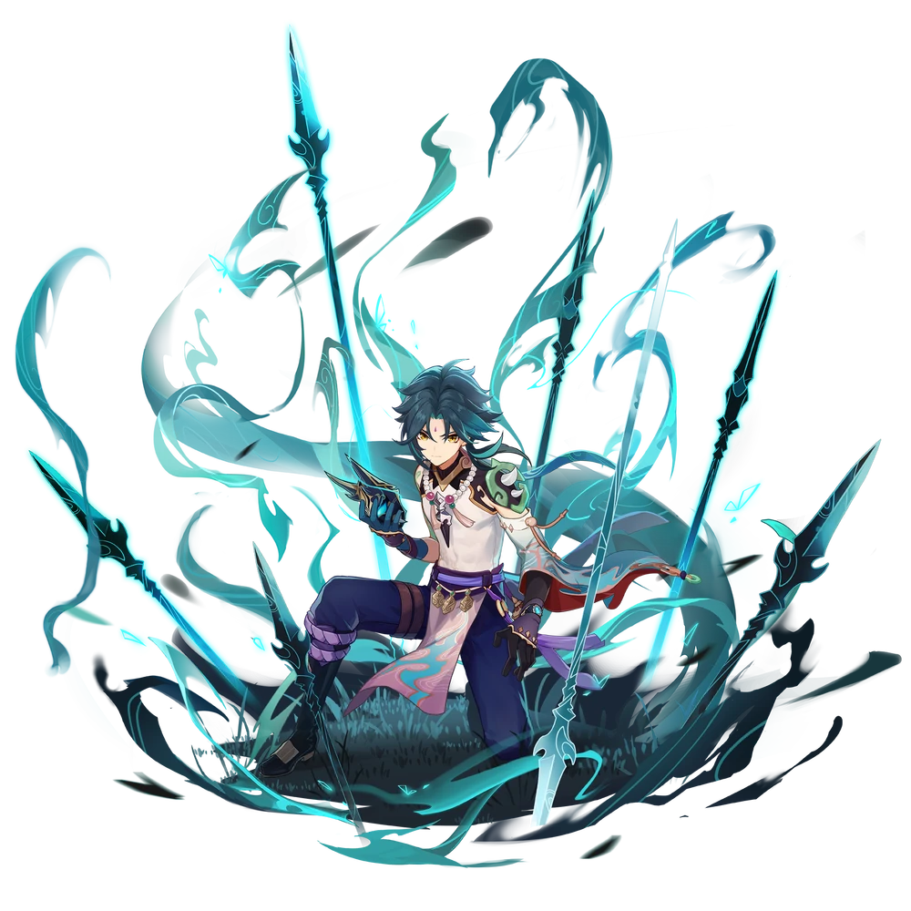

Xiao
Vales
7-18-2022

| Ascension Phase |
Level | Base HP |
Base ATK |
Base DEF |
Special Stat (CRIT Rate) |
|---|---|---|---|---|---|
| 0✦ | 1/20 | 991 | 27 | 62 | — |
| 20/20 | 2,572 | 71 | 161 | ||
| Ascension Cost (0 → 1) | |||||
| 1✦ | 20/40 | 3,422 | 94 | 215 | — |
| 40/40 | 5,120 | 141 | 321 | ||
| Ascension Cost (1 → 2) | |||||
| 2✦ | 40/50 | 5,724 | 157 | 359 | 4.8% |
| 50/50 | 6,586 | 181 | 413 | ||
| Ascension Cost (2 → 3) | |||||
| 3✦ | 50/60 | 7,391 | 203 | 464 | 9.6% |
| 60/60 | 8,262 | 227 | 519 | ||
| Ascension Cost (3 → 4) | |||||
| 5✦ | 70/80 | 10,348 | 284 | 649 | 14.4% |
| 80/80 | 11,236 | 308 | 705 | ||
| Ascension Cost (5 → 6) | |||||
| 6✦ | 80/90 | 11,840 | 325 | 743 | 19.2% |
| 90/90 | 12,736 | 349 | 799 | ||